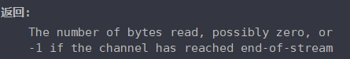

Java NIO客户端主动关闭连接，导致服务器空轮询
当客户端连接关闭时，服务器select()不会阻塞，然后一直分发读就绪操作，且读到的字节长度都是0，这是什么情况。
服务器代码:
try {
ServerSocketChannel serverChannel = ServerSocketChannel.open();
serverChannel.bind(new InetSocketAddress(666));
serverChannel.configureBlocking(false);
Selector selector = Selector.open();
serverChannel.register(selector, SelectionKey.OP_ACCEPT);
while (true) {
int count = selector.select(); //阻塞
if (count > 0) {
Set<SelectionKey> keys = selector.selectedKeys();
Iterator<SelectionKey> iterator = keys.iterator();
while (iterator.hasNext()) {
SelectionKey key = iterator.next();
iterator.remove();
if (key.isAcceptable()) {
System.out.println("client connect");
ServerSocketChannel serverSocketChannel = (ServerSocketChannel) key.channel();
SocketChannel sc = serverSocketChannel.accept();
sc.configureBlocking(false);
sc.register(selector, SelectionKey.OP_READ);
}
if (key.isReadable()) {
SocketChannel socketChannel = (SocketChannel) key.channel();
ByteBuffer buffer = ByteBuffer.allocate(512);
socketChannel.read(buffer);
buffer.flip();
System.out.println("on read size:" + buffer.remaining());
}
}
}
}
} catch (IOException e) {
e.printStackTrace();
}客户端代码：
public class NIOClientTest{
public static void main(String[] args) throws UnknownHostException, IOException{
try {
Socket socket = new Socket("127.0.0.1",666);
try(OutputStreamWriter output = new OutputStreamWriter(socket.getOutputStream());){
output.write(1);
output.flush();
}catch (Exception e) {
e.printStackTrace();
}
socket.close();
} catch (Exception e1) {
e1.printStackTrace();
}
}
}解决：
当客户端主动切断连接的时候，服务端 Socket 的读事件（FD_READ）仍然起作用，也就是说，服务端 Socket 的状态仍然是有东西可读，当然此时读出来的字节肯定是 0。
socketChannel.read(buffer) 是有返回值的，这种情况下返回值是 -1，所以如果 read 方法返回的是 -1，就可以关闭和这个客户端的连接了。
SocketChannel.read 的返回值：

这种情况也有可能会抛出 IOException，需要捕获异常并判断。
nio的客户端如果关闭了，服务端还是会收到该channel的读事件，但是数目为0，而且会读到-1，其实-1在网络io中就是socket关闭的含义，在文件时末尾的含义，所以为了避免客户端关闭服务端一直收到读事件，必须检测上一次的读是不是-1，如果是-1，就关闭这个channel。
ByteBuffer buffer = ByteBuffer.allocate(100);
SocketChannel sc = (SocketChannel) key.channel();
StringBuffer buf = new StringBuffer();
int c = 0;
while ((c = sc.read(buffer)) > 0) {
buf.append(new String(buffer.array()));
}
if (c == -1) {
System.out.println("断开");
sc.close();
}
String msg = buf.toString();
System.out.println(msg);